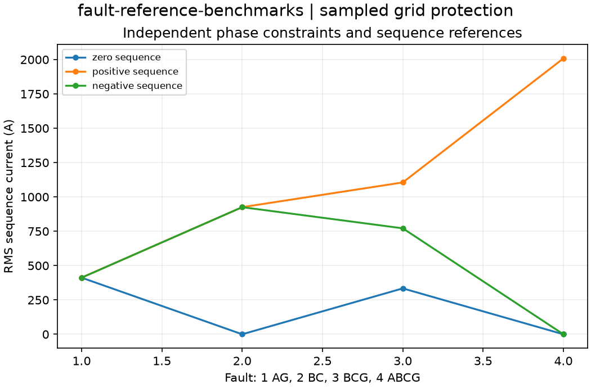

Reproducible sampled grid protection. Units and field components are printed on the scientific axes. RMS phasors use exp(+i omega t); terminal currents point into the protected line.
Sealed numeric archive | Summary CSV | Physical parameters | Run request | Source and environment

| maximum_relative_error | 4.643914990329232e-16 |
|---|
These are simulations, not hardware measurements. Network-model, measurement, timing and statistical uncertainty require distinct convergence checks. Singular or unilluminated data use explicit masks.
Source revision: b6841e1232dcac6db840a727ea4b1e98340b98a7.
Dirty checkout: False.
Configuration SHA-256: 03d267552940f6f4c933ca39c72800ba94030f611ca928db3c45259b14c47706.
Replay preserves original source and parameter provenance. SHA-256 manifests detect changed bytes; they are unsigned integrity records, not certificates of physical validity.